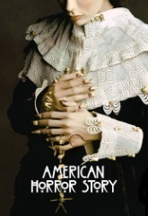
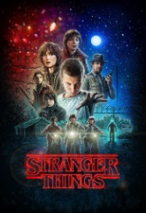
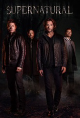
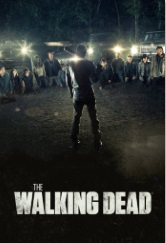

American horror story
A chaque saison, son histoire. American Horror Story nous embarque dans des récits à la fois poignants et cauchemardesques, mêlant la peur, le gore et le politiquement correct. De quoi vous confronter à vos plus grandes frayeurs !
En savoir plus
Bates motel
A la mort de son mari, Norma décide de refaire sa vie dans la ville de White Pine Bay, avec son fils Norman. Elle rachète là-bas un motel abandonné et un majestueux mamoir. La mère et le fils partagent depuis toujours une relation presque incestueuse.
En savoir plus

Stranger things
En 1983, à Hawkins, un jeune garçon disparaît sans laisser de traces. La famille, les amis et la police locale cherchent des réponses et se retrouvent plongés dans un mystère mêlant des expériences secrètes, des forces surnaturelles et une petite fille très étrange.
En savoir plus

Supernatural
Deux frères, Sam et Dean Winchester, chasseurs de créatures surnaturelles, sillonnent les États-Unis à bord d'une Chevrolet Impala noire de 1967 et enquêtent sur des phénomènes paranormaux.Ils espèrent par la même occasion mettre la main sur le démon responsable de la mort de leur mère, vingt ans plus tôt.De manière générale, chaque épisode se déroule dans un lieu différent du pays et correspond à une enquête sur un phénomène paranormal.
En savoir plus
The vampire diaries
Quatre mois après le tragique accident de voiture qui a tué leurs parents, Elena Gilbert, 17 ans, et son frère Jeremy, 15 ans, essaient encore de s'adapter à cette nouvelle réalité. Belle et populaire, l'adolescente poursuit ses études au Mystic Falls High en s'efforçant de masquer son chagrin. Elena est immédiatement fascinée par Stefan et Damon Salvatore, deux frères dont les personnalités sont totalement opposés. Elle ne tarde pas à découvrir qu'ils sont en fait des vampires...
En savoir plus

The walking dead
Après une épidémie post-apocalyptique ayant transformé la quasi-totalité de la population américaine et mondiale en mort-vivants ou « rôdeurs », un groupe d'hommes et de femmes mené par l'adjoint du shérif du comté de Kings (en Géorgie), Rick Grimes, qui se réveille tout juste d'un coma, tente de survivre… Ensemble, ils vont devoir tant bien que mal faire face à ce nouveau monde devenu méconnaissable, à travers leur périple dans le Sud profond des États-Unis.
En savoir plus